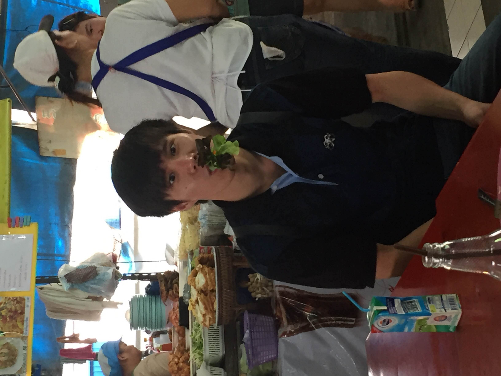

|
Zhenjun Zhao (赵祯俊)
I am a postdoctoral researcher at University of Zaragoza, working with
Javier Civera.
I received my PhD from Chinese University of Hong Kong (CUHK),
under the supervision of Ben M. Chen.
My current research focuses on geometric modeling and optimization in 3D computer vision,
aiming to develop globally optimal and learning-augmented solutions for problems such as camera geometry estimation, Structure-from-Motion, SLAM, and visual localization.
My long-term research goal is to build intelligent visual systems that combine geometric reasoning, optimization, and continual learning to
perceive and understand complex, dynamic 3D environments with high reliability and interpretability.
Email /
Google Scholar /
LinkedIn /
Twitter /
Bluesky /
GitHub
|

|
Research
|
|
TurboReg: TurboClique for Robust and Efficient Point Cloud Registration
Shaocheng Yan,
Pengcheng Shi,
Zhenjun Zhao,
Kaixin Wang,
Kuang Cao,
Ji Wu,
Jiayuan Li
IEEE/CVF International Conference on Computer Vision (ICCV), 2025
paper |
code
A highly efficient and robust point cloud registration method, supporting both CPU and GPU platforms.
|
|
|
Convex Relaxation for Robust Vanishing Point Estimation in Manhattan World
Bangyan Liao*,
Zhenjun Zhao*,
Haoang Li,
Yi Zhou,
Yingping Zeng,
Hao Li,
Peidong Liu
IEEE/CVF Conference on Computer Vision and Pattern Recognition (CVPR), 2025 (Oral, Best Paper Award Candidate, top 0.48%)
(* equal contribution)
paper |
slides |
poster |
code
A globally optimal and outlier-robust method for vanishing point (VP) estimation in a Manhattan world, using convex relaxation techniques.
|
|
|
HeMoRa: Unsupervised Heuristic Consensus Sampling for Robust Point Cloud Registration
Shaocheng Yan,
Yiming Wang,
Kaiyan Zhao,
Pengcheng Shi,
Zhenjun Zhao,
Yongjun Zhang,
Jiayuan Li
IEEE/CVF Conference on Computer Vision and Pattern Recognition (CVPR), 2025
paper |
poster |
code
A learnable sampling probability distribution for matches in robust estimation, no supervision and reinforcement-inspired.
|
|
|
GlobalPointer: Large-Scale Plane Adjustment with Bi-Convex Relaxation
Bangyan Liao*,
Zhenjun Zhao*,
Lu Chen,
Haoang Li,
Daniel Cremers,
Peidong Liu
European Conference on Computer Vision (ECCV), 2024
(* equal contribution)
paper |
project page |
slides |
video |
poster |
code
A globally optimal and efficient large-scale plane adjustment, using alternating minimization and convex relaxation techniques.
|
|
|
DeDoDe v2: Analyzing and Improving the DeDoDe Keypoint Detector
Johan Edstedt,
Georg Bökman,
Zhenjun Zhao
IEEE/CVF Computer Vision and Pattern Recognition Conference (CVPR) Workshop on Image Matching: Local Features & Beyond, 2024
paper |
slides |
code
An improved keypoint detector built on top of DeDoDe.
|
|
|
BALF: Simple and Efficient Blur Aware Local Feature Detector
Zhenjun Zhao
IEEE/CVF Winter Conference on Applications of Computer Vision (WACV), 2024
paper |
project page |
slides |
video |
code
A simple yet both efficient and effective motion blur aware local feature detector.
|
|
|
Benchmark for Evaluating Initialization of Visual-Inertial Odometry
Zhenjun Zhao,
Ben M. Chen
Chinese Control Conference (CCC), 2023
paper |
code
A novel benchmark for the evaluation of the initialization of visual-inertial odometry (VIO).
|
|
|
Hong Kong World: Leveraging Structural Regularity for Line-based SLAM
Haoang Li,
Ji Zhao,
Jean-Charles Bazin,
Pyojin Kim,
Kyungdon Joo,
Zhenjun Zhao,
Yun-Hui Liu
IEEE Transactions on Pattern Analysis and Machine Intelligence (TPAMI), 2023
paper
A novel structural model called Hong Kong world to describe the structured scenes with vertical, horizontal and sloping dominant directions.
|
|
|
SyreaNet: A Physically Guided Underwater Image Enhancement Framework Integrating Synthetic and Real Images
Junjie Wen,
Jinqiang Cui,
Zhenjun Zhao,
Ruixin Yan,
Zhi Gao,
Lihua Dou,
Ben M. Chen
IEEE International Conference on Robotics and Automation (ICRA), 2023
paper |
poster |
code
A novel UIE framework combining both synthetic and real data under the guidance of the revised underwater image formation model and DA strategies.
|
Teaching
|
|
Co-supervisor, Undergraduate Final Year Project, 2019-2020
Co-supervisor, MSc Project, 2019-2020
Teaching Assistant, Multivariable Calculus for Engineers, Spring 2021
Teaching Assistant, Complex Variables for Engineers, Fall 2020
Teaching Assistant, Probability and Statistics for Engineers, Spring 2020
Teaching Assistant (Lead), Introduction to Control Systems, Fall 2019
|
Academic Services
- Conference Reviewer: CVPR, ICCV, ICML, NeurIPS, ICLR, ICRA, 3DV
- Journal Reviewer: TPAMI
|
|